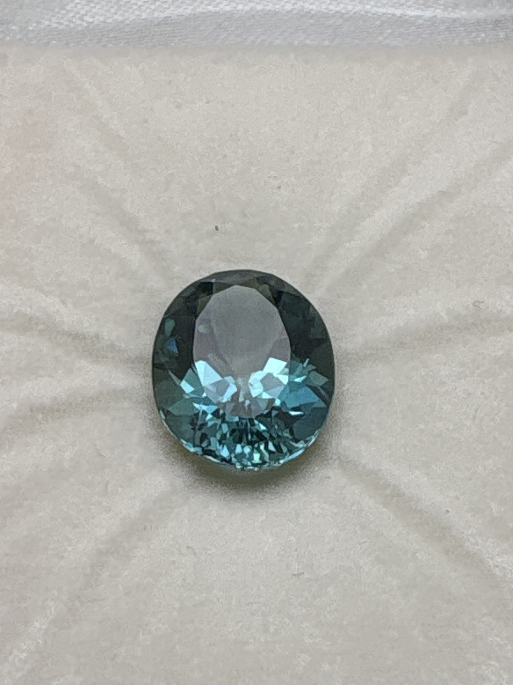

The Gem Drawer › No. 57

A teal blue-green oval whose box carries two labels, neither matching the stone.
| Catalogue no. | #57 |
|---|---|
| As labeled | UNIDENTIFIED - label mismatch, see notes (printed label says "Hyacinth Zircon," second note says "Nickel Topaz," neither matches the actual oval teal/blue-green stone photographed) |
| Shape / cut | Oval |
| Weight | Unclear - see notes (label says 4.00ct, second note says 10ct - neither confirmed for this stone) |
| Measurements | Not recorded |
| Colour | Teal/blue-green |
| Clarity / condition | Not recorded |
Interested in this stone, or in the collection as a whole? Terry VanWormer can answer questions about it.
Click here to inquireor email Terry directly at maxrebo34@gmail.com